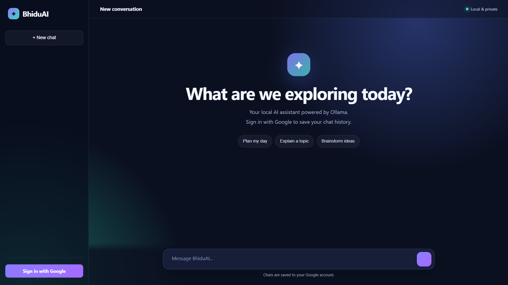

Building my own AI systems.
BhiduAI is a learning-focused AI engineering project exploring Transformers, local LLM inference, web applications, authentication and persistent conversations.
What is BhiduAI?
An experimental project created to understand how AI systems work by actually building and experimenting with them.
BhiduAI combines a custom TinyGPT Transformer implementation with a practical local AI web application.
The project uses Python and PyTorch for model experimentation, while Flask, Ollama and Llama provide the foundation for the current web assistant.
The goal is not simply to use an AI model, but to learn the engineering behind AI systems.
"Learn the technology by building it, breaking it, and rebuilding it."
Two AI approaches.
BhiduAI currently explores both custom model development and practical local LLM applications.
TinyGPT
A compact character-level decoder-only Transformer implemented using PyTorch and trained on a local dataset.
Local LLM
A practical conversational assistant powered locally through Ollama and Llama 3.2 3B.
Flask Web App
A custom dark-themed interface providing authentication, conversations and persistent chat history.
Cloud Storage
Google Cloud Firestore is used to store authenticated users' conversation history.
How it works.
The project contains separate workflows for training the custom model and running the practical web assistant.
Custom TinyGPT Local Dataset │ ▼ Character Tokenization │ ▼ Transformer Training │ ▼ bhiduai.pth │ ▼ Terminal Chatbot Web Assistant User │ ▼ Flask Web App │ ├──────────────► Google Authentication │ ▼ Ollama │ ▼ Llama 3.2 3B │ ▼ AI Response │ ▼ Firestore (Chat History)
BhiduAI in action.
A custom dark-themed interface built for the local AI assistant.

Built with.
Technologies used across the model, application and infrastructure.
- Python
- PyTorch
- Transformer
- Flask
- Ollama
- Llama 3.2 3B
- Google OAuth
- Firestore
- HTML
- CSS
- JavaScript
- Git
- GitHub
Still building.
BhiduAI is an evolving project. These are some of the areas planned for future development.
-
Custom TinyGPT
Implemented and trained locally.
-
Local LLM inference
Ollama + Llama integration.
-
Web application
Flask-based conversational interface.
-
Authentication & Chat History
Google authentication and Firestore persistence.
-
Web Search
Explore access to current web information.
-
Weather & Live Information
Integrate useful real-time data sources.
-
Deeper Model Integration
Continue experimenting with the custom model and application.
Explore the code.
The BhiduAI source code, documentation and project structure are available on GitHub.
Open GitHub Repository ↗